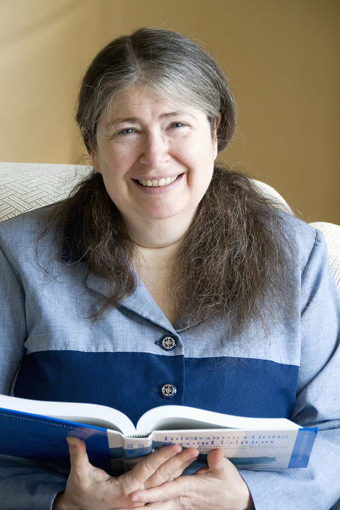

Radia Joy Perlman (Portsmouth, 1 de janeiro de 1951) é uma cientista da computação estadunidense, projetista de software e engenheira de redes. É algumas vezes referenciada como a "mãe da Internet"[1] por sua invenção do protocolo Spanning Tree (STP), que é fundamental para a operação de pontes de rede mais conhecida por bridge (redes de computadores), enquanto trabalhava para a Digital Equipment Corporation. Ela também fez grandes contribuições para muitas outras áreas de design e padronização de redes, como os protocolos de roteamento link-state.
Mais recentemente, ela inventou o protocolo TRILL para corrigir algumas das deficiências das spanning trees. Atualmente, ela é funcionária da Dell EMC.
Perlman cresceu perto de Asbury Park, em Nova Jersey. Seus pais trabalhavam como engenheiros para o governo dos EUA. Seu pai trabalhou no Radar e sua mãe era uma matemática de formação que trabalhava como programadora de computador. Durante seus anos de escola, Perlman achava as matérias de matemática e ciência “fáceis e fascinantes”, mas não teve nenhum problema em alcançar notas altas em outras matérias também. Ela gostava de tocar piano e trompa. Enquanto sua mãe a ajudava com o dever de matemática, eles falavam principalmente sobre literatura e música
Apesar de ser a melhor estudante de ciências e matemática em sua escola, foi somente quando fez uma aula de programação no ensino médio que Perlman começou a considerar uma carreira que envolvia computadores. Ela era a única mulher na classe e depois refletiu: "Eu não era uma pessoa do tipo “mão na massa”. Nunca me ocorreu desmembrar qualquer coisa. Presumi que ou eu seria eletrocutada ou quebraria alguma coisa".
Ela ficou famosa por sua invenção do Protocolo Spanning Tree (STP), que é fundamental para a operação de pontes de rede, enquanto trabalhava para a Digital Equipment Corporation. Perlman é autora de um livro sobre redes e coautora de outro sobre segurança de rede. Ela detém mais de 100 patentes.[7] Ela foi bolsista na Sun Microsystems e ministrou cursos na Universidade de Washington, na Universidade de Harvard e no MIT, e foi palestrante em eventos em todo o mundo. Perlman recebeu prêmios como o Lifetime Achievement Awards da Usenix e o Association for Computing Machinery’s Special Interest Group on Data Communication (SIGCOMM
Perlman inventou o algoritmo spanning tree e o Protocolo Spanning Tree (STP). Enquanto trabalhava como engenheira consultora na Digital Equipment Corporation (DEC) em 1984, ela foi encarregada de desenvolver um protocolo simples que permitisse que as pontes de rede localizassem loops em uma rede local (LAN). Era necessário que o protocolo usasse uma quantidade constante de memória quando implementado nos dispositivos de rede, independentemente do tamanho da rede. Criar e expandir redes com ponte era difícil porque os loops, onde mais de um caminho leva ao mesmo destino, poderiam resultar no colapso da rede. Caminhos redundantes na rede significavam que uma ponte poderia encaminhar um quadro em várias direções. Portanto, os loops podem fazer com que os quadros Ethernet não atinjam seu destino, inundando a rede. Perlman utilizou o fato de que as pontes tinham endereços MAC exclusivos de 48 bits e criou um protocolo de rede para que as pontes dentro da LAN se comuniquem umas com as outras. O algoritmo implementado em todas as pontes na rede permitiu que as pontes designassem uma ponte raiz na rede. Cada ponte mapeou a rede e determinou o caminho mais curto para a ponte raiz, desativando outros caminhos redundantes. Apesar das preocupações de Perlman de que o protocolo spanning tree levou cerca de um minuto para reagir quando mudanças na topologia da rede ocorreram, tempo em que um loop poderia derrubar a rede, foi padronizado como 802.1d pelo Institute of Electrical and Electronics Engineers (IEEE). ). Perlman disse que os benefícios do protocolo chegam ao fato de que "você não precisa se preocupar com topologia" ao mudar a forma como uma LAN é interconectada. Perlman, no entanto, criticou que mudanças foram feitas no decorrer da padronização do protocolo.
Perlman foi a principal projetista dos protocolos DECnet IV e V, que fazem parte do conjunto de protocolos de rede DECnet para arquiteturas de rede ponto a ponto. Ela também fez contribuições importantes para o Protocolo de Rede sem Conexão (CLNP). Perlman colaborou com Yakov Rekhter no desenvolvimento de padrões de roteamento de rede, como o Protocolo de Roteamento de Interconexão de Sistema Aberto (IDRP), que permite que roteadores em redes de comutação de pacotes se comuniquem entre si através de domínios de broadcast. Na DEC, ela também supervisionou a transição do vetor de distância para os protocolos de roteamento link-state. Os protocolos de roteamento link-state tiveram a vantagem de se adaptarem às mudanças na topologia da rede mais rapidamente, e o protocolo de roteamento do estado do link do DEC ficou em segundo lugar apenas no protocolo de roteamento link-state da ARPANET. Enquanto trabalhava no projeto DECnet, Perlman também ajudou a melhorar o protocolo de roteamento do sistema intermediário para o intermediário, conhecido como IS-IS, para rotear o protocolo IP (Internet Protocol), AppleTalk e o protocolo IPX (Internetwork Packet Exchange)
O protocolo Open Shortest Path First (OSPF) dependia em parte da pesquisa de Perlman sobre a difusão tolerante a falhas de informações de roteamento
Perlman posteriormente trabalhou como engenheira de rede para a Sun Microsystems, agora Oracle. Ela se especializou em protocolos de rede e segurança e, enquanto trabalhava para a Oracle, obteve mais de 50 patentes